|
|
|
lornaland.co.uk Holidays Photo Gallery Lornaland Natter USA 2005 Journal Menu...21st May - 23rd May24th May - 26th May 27th May - 29th May 30th May - 1st June 2nd June - 4th June Paros Pictures |
Paros30th May - 1st May 2004Sunday 30th May 2004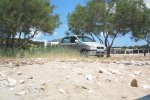 It's our last day with Herman and another lazy day at the beach. This time we head to Glifta beach, which turns out to be very nice and quiet. 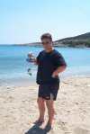Dan become a master craftsman and spent hours building a boat - HMS Lorna from some wood, rope and material he found along the beach. She didn't do too well. After being rescued by Dan and some adjustments later she was ready for her next voyage. This time she set sail and eventually, capsized! 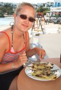In need of some food and drinks, we headed to Piso Livadhi for lunch. Lunch turned out to be a huge waffle with 3 scoops of ice-cream and a banana and chocolate crepe. Very very yummy but very sickly too! We made a slight detour on our way home and headed up the highest mountain in Paros which ending up being very scary due to the lack of petrol in Herman and the Greek roads. 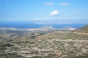 After a couple of minutes at the top to take some photos, we headed back to a safer level and a petrol station (although I have to admit, on normal ground the petrol wasn't nearly as empty as it looked going up!) 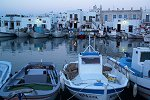As it was our last night with Herman, we made the most of him and went to Noussa for dinner (my turn to be des) We found a very nice restaurant in the old harbour but had to quickly run away when they gave us the menu because it was ALL fish! In the end we found somewhere else which looked nice on the seafront and where I could eat meat. 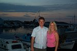Dinner tonight was tzatziki, bread and "small cheese pies" (cheese wrapped in filo pastry) followed by a stuffed burger for Dan and lamb in pastry for me with a side order of Greek salad. Just enough room left for dessert of yogurt and honey and a fresh fruit salad. Monday 31st May 2004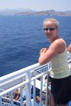 Our day trip to Naxos meant an alarm call at 6.30am! The Blue Star Ferry "Paros" set sail from Parikia at 11.30am and at 12.50pm, we had arrived in Naxos Town. 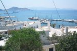First stop was a taverna for a nice cool drink and to decide what to do. We set off for a wander round the town and ended up getting lost as usual just like the pirates! It was very hot and when we'd found our way to the beach, we discovered it was very busy, much busier than any of the beached on Paros. Getting hotter we went in search of another cool drink. Dan decide to try a frappe (iced coffee) and I had a mixed fresh fruit juice complete with huge pieces of fruit on the top. Very OTT :o) 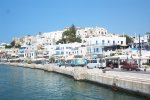 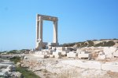Cooled and refreshed, it was time to set off on our wanders again. This time, we headed towards the Temple of Apollo, where I dazzled Dan with my knowledge (someone read the guide book properly!) Back in the old town we wandered again but due to "Siesta" time being for most of the afternoon there were no shops open. It was approaching dinner time so we decided to give up and headed for a bar to have a nice cocktail (well, it was happy hour at only 3.50 Euros) 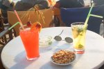 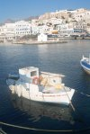For dinner we found a little taverna with a very persuasive man (who incidentally was a good friend of Benny Hill's) where we had soft cheese and Naxos sausage (and chips) to start followed by a mixed souvlaki each along with complementary shots of ouzo from Gregory. Instead of dessert, we ran off to the bar for another cocktail before the boat back to Paros at 10.00pm. 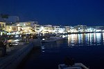The boat was on it's way to Piraeus (Athens) from Santorini and was full of "in dependant travellers" trying to find a big enough space somewhere to sleep. We finally got back to Paros at midnight. Tuesday 1st June 2004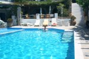 After our busy, and long day yesterday, we settled down for a lazy day by the pool with our books for some serious slobbing and sun-bathing. 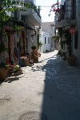By 4.00pm we had done enough reading, lying and swimming and headed into town to book our trip to Mykonos for tomorrow. Things didn't go to plan though as it turned out there is only one ferry to and from Mykonos in a day so we wouldn't be able to get there and back in a day. Luckily, there were trips available to Delos and Mykonos. 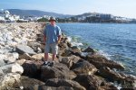 The only snag was they went every Tuesday, Thursday and Sunday so we'd have to go on our last day instead. After a quick drink, we headed back to get ready for dinner. Dinner tonight was at the Hibiscus again where we had tzatziki, bread, saganaki (friend cheese) and Greek salad to start followed by pizza for Dan and lamb chops for me. |